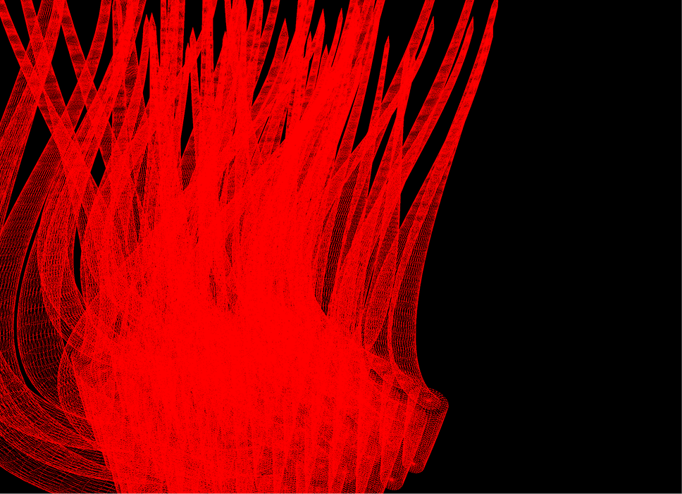
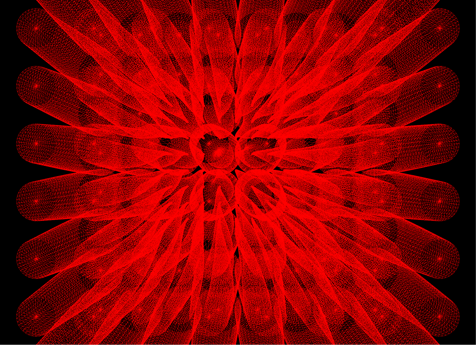
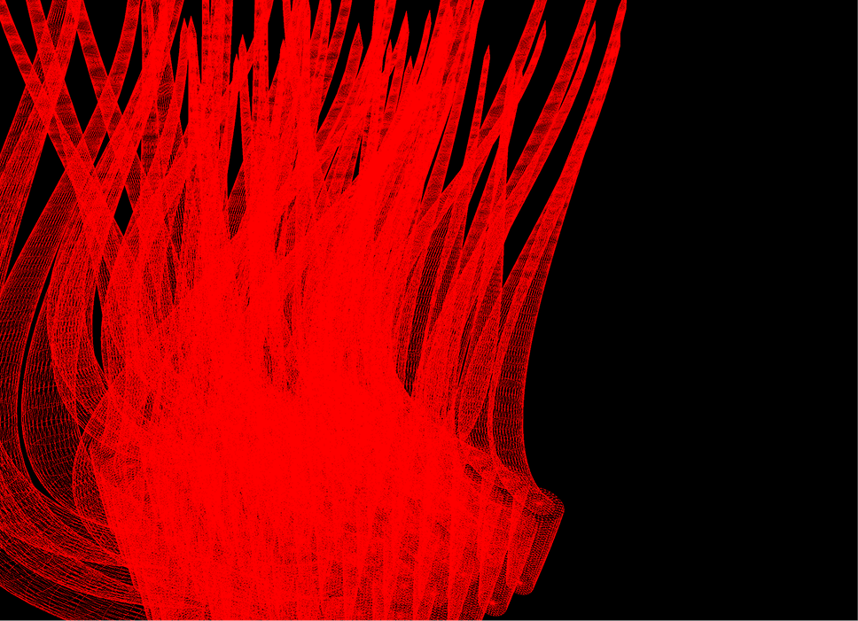
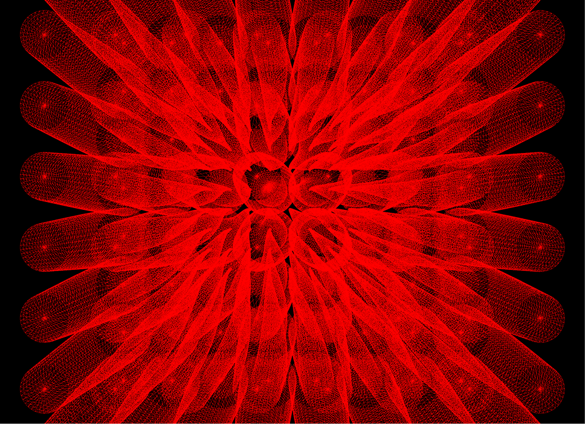

Creative Coding Practice Exploration
Algorithmic thinking and parametric making across design majors and digital media art
Since 2020
This is an ongoing practice project that explores how algorithms can be used and translated across different design majors. It includes Product Design, Visual Communication, and Art and Technology, and it also extends to narrative space making in Digital Media Art. The project is developed through daily exercises, course content development, and workshops. Its goal is to build a clear and reusable path for creative coding. It asks one key question. When algorithms enter design and art, how can creators balance randomness and control, and turn abstract rules into forms, structures, and experiences that can be felt.
Method and Focus
The project follows a parametric process. It moves from basic drawing commands, to data structure, and then to generative logic and visual output. The focus is not on complex techniques. It is on helping learners understand rules, variables, and mapping relationships, and on building decision making through repeated tests. In this project, algorithms are not decoration. They are a way to organize materials and organize experience.
Case Study 1
Spotify data visualization workshop
This workshop was designed for students from China Academy of Art, including Product Design, Visual Communication, and Art and Technology. It starts with simple graphic commands in Processing and basic CSV data handling. Students build a full loop from reading data, to mapping parameters, and to generating visual output. Through this process, they can clearly see how randomness creates variation and style, how control creates order and consistency, and how both can be balanced through rule design and parameter ranges.
Case Study 2
Basic algorithms for 3D generative structures
This case is part of course content development for the Creative Coding and Design course at China Academy of Art, aimed at Product Design students. The goal is to help students understand the basic logic of parametric design and see the power of rules through 3D form generation. The course uses basic algorithms and simple geometry. It begins with explainable mechanisms and helps students build control over complex forms step by step. It also shows that uncertainty in design is not noise. It is a variable that can be designed and constrained.

 





Case Study 3
Narrative space building with modular units in Blender
This case brings algorithmic thinking into Digital Media Art and focuses on how space can become narrative through rules. I first build a set of reusable modular units in Blender. These units become the basic vocabulary. By using rules such as repetition, stacking, shifting, scaling, and local replacement, I construct narrative spaces with rhythm and layers. Compared with the first two cases, which focus more on data to visual mapping, this part focuses more on how generative rules shape spatial atmosphere and viewing paths. The narrative does not rely on a single written story. It emerges from accumulated relationships and transitions inside the structure.
Case Study 4
Visual information exploration with Perlin noise, flow fields, and particle systems
This case explores visual information through a generative system built with Perlin noise, flow fields, and particle behaviors. Perlin noise is used to create smooth changes across the space. The flow field translates these values into directional vectors. Particles then move through the field and leave traces over time. The image is not drawn as a fixed composition. It emerges from continuous motion, accumulation, and feedback.
The focus of this study is how simple rules can produce complex visual structures, and how control and variation can coexist in the same system. By adjusting parameters such as noise scale, field strength, particle speed, lifetime, and density, the work tests different balances between stability and turbulence, clarity and complexity, order and randomness. This case supports the larger project goal of building a clear understanding of algorithmic aesthetics and making visual systems that are both explainable and expressive.
Why it matters
This ongoing exploration works as algorithm literacy training for design students, and also as a generative narrative method for digital media art. It supports students in understanding how digital products and systems are generated, and it shifts practice from result driven output to mechanism driven thinking. It also turns abstract ideas into prototypes and visual experiments that can be tested. The long term goal is to make algorithms a transferable design tool and a creative language, rather than a standalone technical display.